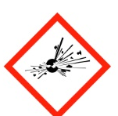
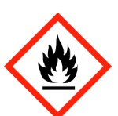
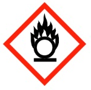
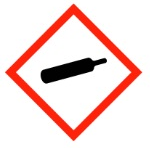
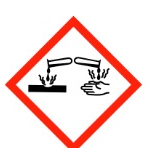
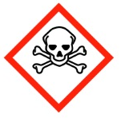

Hazard Awareness – Chemical
If exposed:
- Remove contaminated clothing. Flush exposed area with water for no less than 15 mins.
- With a nitrile glove, apply calcium gluconate gel to the skin. If your eyes have been exposed, flush with calcium gluconate saline solution.
- Call 88 (McMaster phone) or 905-522-4135 (cell phone) immediately and notify your supervisor. HF exposure is a medical emergency even if pain is minimal at first.
See the current Hydrogen Fluoride Emergency Protocol for full detail before working with HF.
Chemical hazards are managed under McMaster's Hazardous Materials Management Program (RMM 501).
Hazardous chemicals, as defined in the McMaster University Laboratory Manual, may fall into one or more of the following categories:
- Explosive
- Flammable / combustible
- Reactive
- Oxidizing
- Toxic
- Corrosive (pH < 5.5 or > 9.5)
- Compressed gas
GHS/WHMIS Pictograms
These are the six standardized hazard pictograms used on chemical labels and Safety Data Sheets under WHMIS 2015 / GHS. The same symbols appear beside the matching hazard category below.

Explosive
Flammable
Oxidizing
Compressed Gas
Corrosive
ToxicExplosive Materials
Explosive materials release pressure, gas, and heat almost instantaneously when subjected to sufficient shock, friction, pressure, or temperature. Some compounds (including certain peroxide-forming solvents and azide compounds used in some research) can become explosive over time even without external provocation. See Potentially Explosive Chemicals in the Laboratory and Safe Handling of Azides for current guidance.
Flammable / Combustible Materials
This class of material ignites and burns readily. Flammable liquids have a flashpoint below 37.8°C; combustibles have a flashpoint between 37.8°C and 93.3°C. At sufficiently high ambient temperatures, some flammable or combustible materials can autoignite without any external spark or flame.
Oxidizing Materials
Oxidizers promote or cause combustion in other materials either by being oxygen-rich (e.g., chlorates, permanganates) or by readily accepting electrons during oxidation (e.g., chlorine, bromine). The presence of oxidizing liquids or solids significantly increases fire and explosion risk, and can cause materials that are normally non-flammable to burn.
Toxic Materials
Toxic materials cause harmful biological effects on contact, ingestion, or inhalation. Effects range from temporary irritation to permanent tissue damage, depending on dose and exposure route. Always consult the SDS for a chemical's specific toxicological properties before use.
Corrosive Materials
Corrosives, typically strong acids or bases, chemically attack and damage tissue and materials on contact. Stronger corrosives act more rapidly. Inhalation of corrosive vapours can burn sensitive respiratory tissue even without direct skin contact.
Compressed Gases
Compressed gases are stored under pressure in cylinders or pressurized lines, and may be liquefied, non-liquefied, or dissolved. A leaking or ruptured cylinder can become a projectile due to the stored pressure. Cylinders must always be secured to a wall- or table-mounted bracket, capped when not in use, and moved only with an appropriate cart. Many compressed gases carry additional hazards (flammability, toxicity, corrosivity, or oxidizing potential) once released; see the Mandatory Training page for current Gas Cylinder course requirements.
Reactive Materials
Reactive materials can generate or absorb significant heat, or produce hazardous byproducts, when mixed with certain other materials. Proper segregated storage is critical. Mixing incompatible reactive materials, even unintentionally during waste disposal, can result in fire, explosion, or toxic gas release. See Storage of Chemicals in the Lab for current compatibility groupings.
Related Resources
- Hazardous Materials (UHS)
- Chemical Spill Response Guidelines
- WHMIS Pictograms and Hazards
- Mandatory Training
Sources: McMaster University Risk Management Manual RMM 501 (Hazardous Materials Management Program); McMaster University Laboratory Manual; UHS Lab Safety resources, hr.mcmaster.ca/.../lab-safety; Canadian Centre for Occupational Health and Safety (CCOHS).